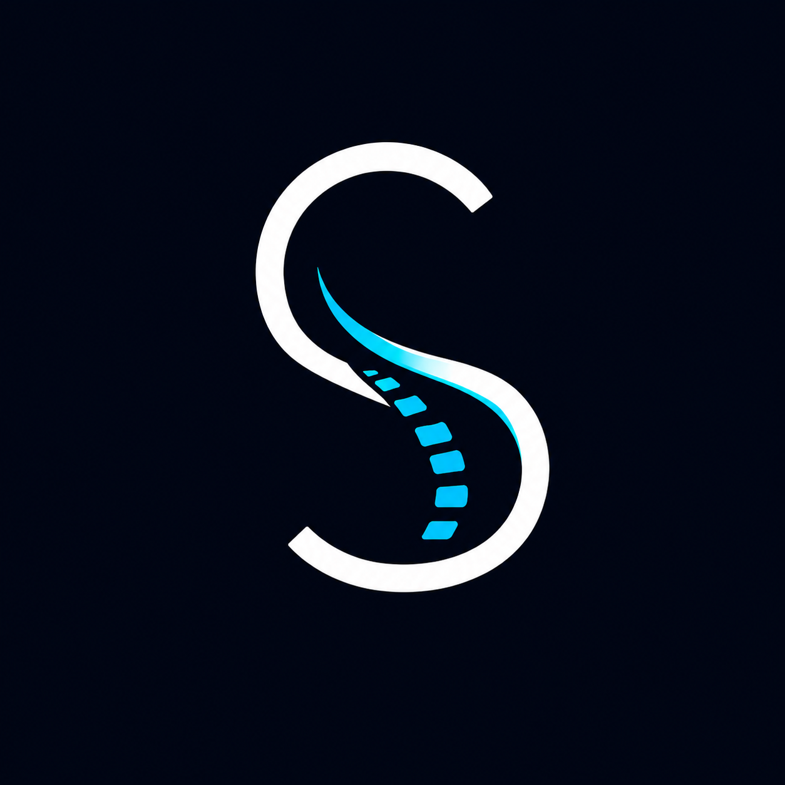

Multi-node wearable posture feedback system
A multi-node wearable that turns posture changes into local vibration feedback.
Demo
A 30-second demo showing how the system detects poor sitting posture and gives a gentle vibration reminder to adjust.
How it works
The wearable uses separate nodes to sense posture changes at different body areas. When one area moves beyond a set range, the system identifies the location and sends a gentle vibration cue to that part of the body.
Each node tracks the tilt of its body area independently.
The chest node compares readings against a set range and locates where posture drifts.
A gentle vibration cue is sent to that specific node — no screen, no sound.
Posture data
Live posture events logged from the wearable to Firebase Realtime Database.
Personal plan
Recommendation cards generated from posture history — showing which body area drifts most and what adjustment may help.
Collecting posture history…
A cue will appear once enough events are logged.